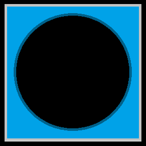
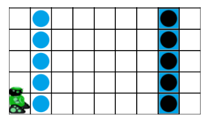
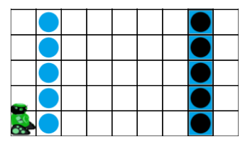
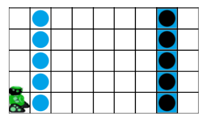
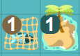
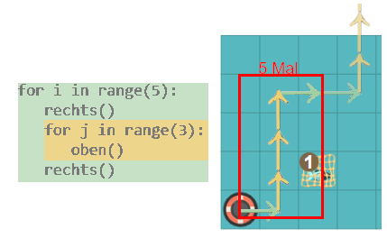

Murmeln verschieben
 
 

Der Roboter soll jeden Fisch aufheben und auf der entsprechenden Insel in der jeweiligen Zeile ablegen.
Der Roboter kann höchstens einen Fisch auf einmal tragen.
Bitte schau dir vorab die Erläuterungen Erläuterungen der Bausteine unter "weitere Hinweise" an.
Bitte schau dir vorab die Erläuterungen unter "weitere Hinweise" an.
Weitere Hinweise:

Die Zahl am Netz zeigt jeweils an, wie viele Fische enthalten sind.
Die Zahl an der Insel zeigt jeweils an, wie viele Fische bestellt wurden und abgeliefert werden
sollen.
Als Erinnerung:
for loop in range(5): rechts() oben()Dieser Code lässt den Roboter fünf Mal einen Schritt nach rechts und einen Schritt nach oben gehen.
Du kannst den Bausteine wiederhole mehrmals ineinander verschachtelt verwenden:
for-Anweisungen ineinander verschachteln müssen, so wie hier im Beispiel
gezeigt:
Dabei wird alles, was beim grünen Block eingerückt ist, 5-Mal ausgeführt. Alle Befehle im orangenen Block werden 3-mal ausgeführt. Der Roboter geht also 5-Mal:
einen Schritt nach rechts, drei nach oben, einen Schritt nach rechts.
Anmerkung: Das Wort zwischen for und in ist nur ein Platzhalter, auch Variable genannt (dazu später mehr). Als Name kann hier alles verwendet werde, gesehen habe wir schon loop, i oder j. Wichtig ist, dass bei zwei ineinander geschachtelten for Schleifen nicht zwei Mal der gleiche Name verwendet wird.